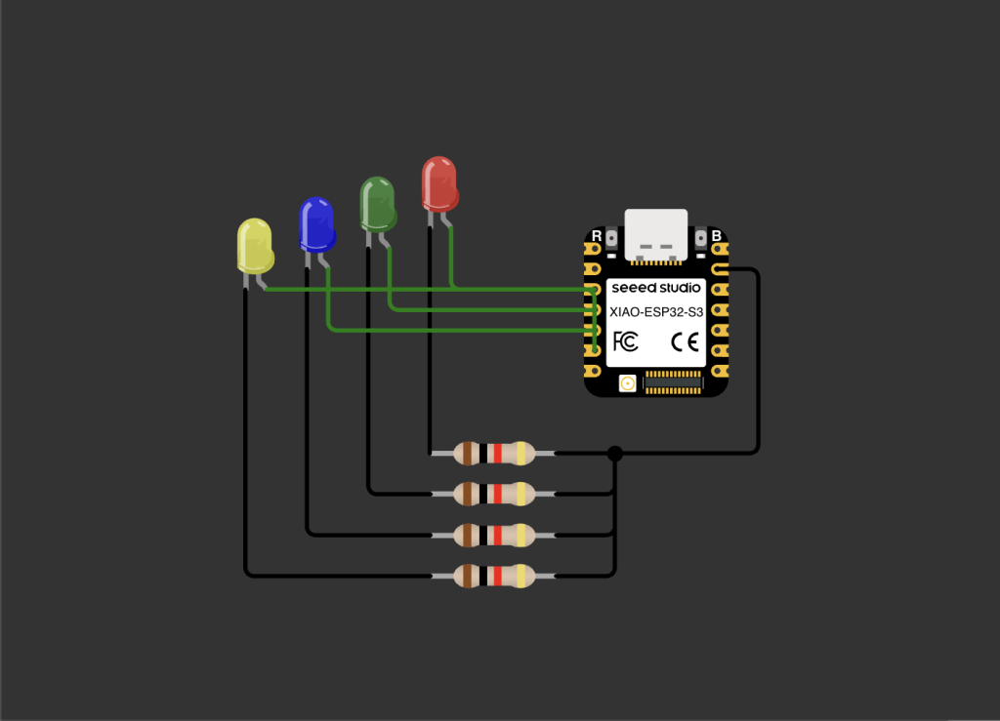

Memory Management and Hardware Abstraction
- Project Overview and Technical Evolution In Week 4, the focus shifted from basic hardware connectivity to the management of memory and data structures in C++. I refactored an LED sequence for the XIAO ESP32-S3, moving away from manual pin declarations toward a pointer-based architecture. This involved three distinct steps of hardware and software iteration.
- Technical Implementation Steps
Step 1: Hardware Expansion I modified the circuit by adding a Yellow LED connected to pin D5 with a 1000 ohm resistor. This required updating the JSON diagram with a new LED component and resistor, and creating new connections to the ground junction. This physical expansion set the stage for more complex code management.
Step 2: Setup Refactoring with Pointers I refactored the setup function by creating two arrays: one for the LED pins (D2, D3, D4, D5) and one for their corresponding colour names. Instead of calling pinMode multiple times, I used a pointer to iterate through the pins array. By using pointer arithmetic, I was able to set each pin as an output in a single loop, which makes the code much cleaner and easier to scale.
Step 3: Loop Refactoring and Pointer Arithmetic The final step involved refactoring the loop function to remove manual digitalWrite calls for each LED. I used a pointer and a for loop to iterate through all four LEDs. Within the loop, the program prints the color name and uses pointer arithmetic (such as *(pinPtr + i)) to turn the corresponding LED on and off with a 500ms delay.
- Key Learning: Scalability and Abstraction This project demonstrated how pointers allow for hardware abstraction. By separating the physical pin data from the execution logic, the system becomes much more flexible. If more LEDs are added in the future, the core logic in the setup and loop functions will not need to be changed; only the initial arrays need to be updated. This approach marks a transition toward more professional embedded systems programming.

Wokwi Simulation: https://wokwi.com/projects/452749957254217729